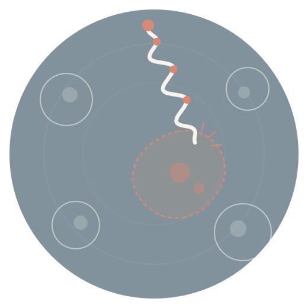
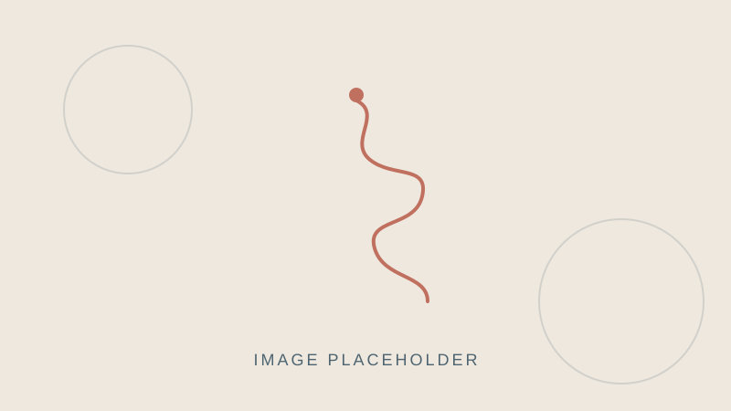

Protein Research
Discovery and characterisation of BSP proteins, from expression to cell-based assays.
About protein researchPreclinical protein research
Assisi Care is developing BSP proteins, a research-stage approach designed to act selectively against cancer cells while sparing normal cells. We pair the science with rigorous data analysis and strategic planning.
Research stage · Not approved for clinical use

The problem
Conventional chemotherapy attacks rapidly dividing cells, whether they are cancerous or healthy.
Side effects on healthy tissue often limit how much treatment a patient can receive.
Therapies that reliably distinguish cancer cells from normal cells could change that balance.
Our approach
Our research asks a focused question: can a protein act against cancer cells while leaving normal cells unharmed?
We design and study BSP proteins, a family of engineered proteins at the centre of our research.
In laboratory studies, BSP proteins are designed to act on features that distinguish cancer cells from normal cells.
Our preclinical work measures cancer-cell death alongside the viability of healthy cells, the balance that matters most.
Early evidence
Reduction in cancer-cell viability in vitro
Placeholder dataCancer cell lines tested
Placeholder dataNormal-cell viability retained under the same conditions
Placeholder dataResults are from early laboratory studies and do not show safety or effectiveness in people. Replace each figure with verified data and link it to its source.
What we do
Discovery and characterisation of BSP proteins, from expression to cell-based assays.
About protein researchStatistics, bioinformatics and clear visualisation that turn raw assay data into decisions.
About data analysisR&D roadmaps, target prioritisation and planning for grants, partners and investors.
About strategic planningWhere we are
Bringing a new therapy to patients takes many careful steps. This is where our BSP program stands today.
BSP protein candidates identified
Selectivity tested in cell models
Efficacy and safety in animal models
Manufacturing, toxicology, regulatory package
First studies in people
Placeholder: confirm the current stage
Our people

Founder & Chief Scientific Officer
Placeholder bio: degrees, research background and focus.
Head of Data Science
Placeholder bio: expertise in statistics and bioinformatics.
Scientific Advisor
Placeholder bio: institution and relevant experience.
News & insights

Placeholder post. Introduce the company, its mission and the BSP protein program in a few short paragraphs.
Placeholder post. Name the conference, the poster or talk title, and link to the abstract once it is public.
Placeholder post. A plain-language explainer on how targeting cancer cells while sparing healthy ones could change treatment.
We work with research groups, industry partners and investors who share our focus on selectivity.